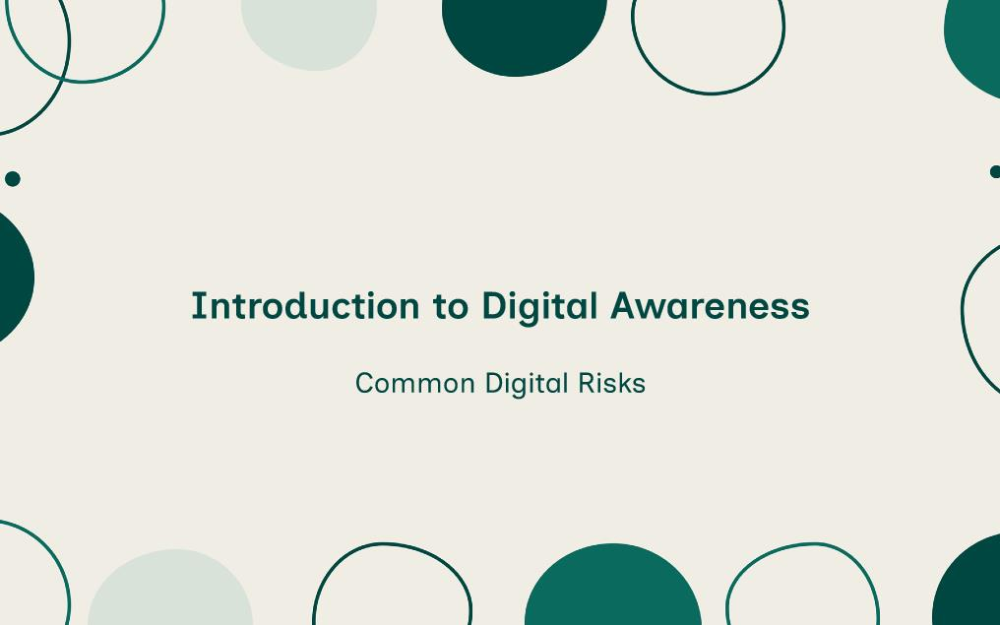
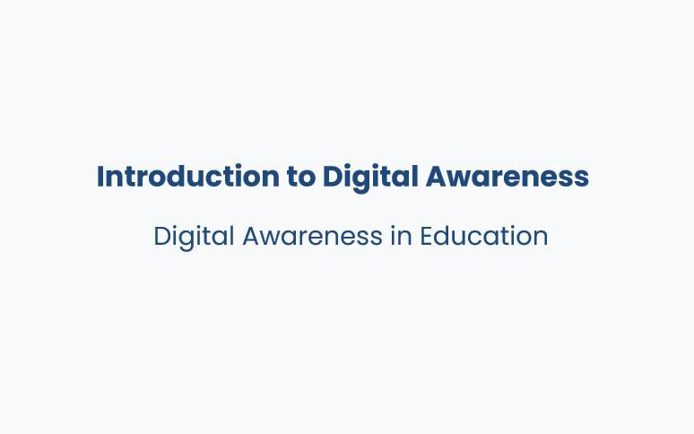

Featured Projects
Together We Win: Navigating Teamwork Challenges
A branching scenario that drops the learner into a team where speaking up has a cost, because most teamwork training teaches principles people agree with and then abandon under pressure.
View project →
Common Digital Risks
A five-risk online safety module that teaches children to notice what's wrong before deciding what to do, because a child who can recite the rule will still click the prize banner.
View project →
Digital Awareness in Education (Teachers & Staff)
The opening module of a digital awareness course for school staff, built to move one belief before anything else can land: that digital risk is IT's problem.
View project →